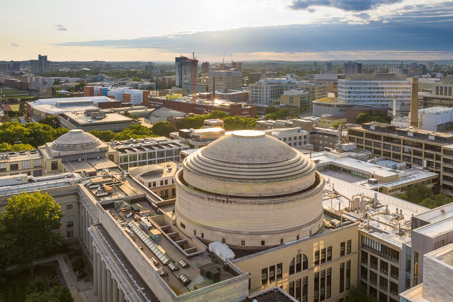
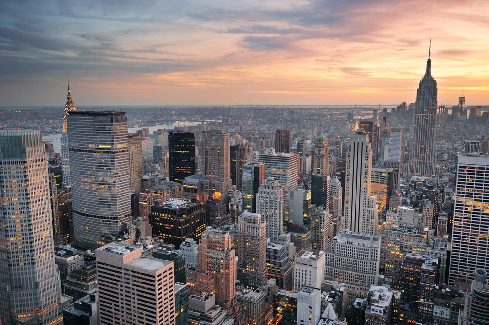

Siddh Jariwala
Everything starts with an action
Who?
 My name is Siddh Jariwala, and I’m currently in 11th grade at Canyon Crest Academy in San Diego. As a student, I love math classes, like calculus and statistics, as well as some science classes, including chemistry. While I do like the humanities subjects, I simply feel less inclined to them due to the inherent subjectivity in each one. Outside of school, I enjoy swimming and playing piano, since I’ve been doing both for more than a few years, and as such, they’ve become a central part of my life. In addition, I like to watch movies of most any genre, as long as it’s good, and as a result, I’ve seen more movies than I can count, which hopefully was not a waste of time (I enjoyed it either way).
My name is Siddh Jariwala, and I’m currently in 11th grade at Canyon Crest Academy in San Diego. As a student, I love math classes, like calculus and statistics, as well as some science classes, including chemistry. While I do like the humanities subjects, I simply feel less inclined to them due to the inherent subjectivity in each one. Outside of school, I enjoy swimming and playing piano, since I’ve been doing both for more than a few years, and as such, they’ve become a central part of my life. In addition, I like to watch movies of most any genre, as long as it’s good, and as a result, I’ve seen more movies than I can count, which hopefully was not a waste of time (I enjoyed it either way).
Why?

What’s the end goal? I plan to major in Applied Mathematics when I go to college, with a minor in Statistics, Computer Science, or Computational Finance. With this major, I hope to get a job in quantitative finance, preferably in an economic hub like New York City. To this end, since quantitative finance is an extremely competitive field, I hope to go to a really good college, with my top choices being MIT, Princeton, and Carnegie Mellon, which, of course, is quite unlikely, but I still have hope. Honestly, as long as I can stay in the field of mathematics, I would be happy.
Where?

In the future, I would love to live in a big city like New York or LA simply due to the diversity there, meaning the mix of different people and cultures that becomes common in any city. In addition, being able to walk anywhere I wanted, even late at night, would be a different experience in itself. Not to say that I don’t like the suburbs, since Carmel Valley is one of my favorite places as well, due to its familiarity and the fact that I enjoy driving from place to place. However, regardless of where I go, I would rather stay in warmer weather, since the cold has always been horrible for me. For some reason, this doesn’t really apply to snow, only to places where there is strong wind and no sun.